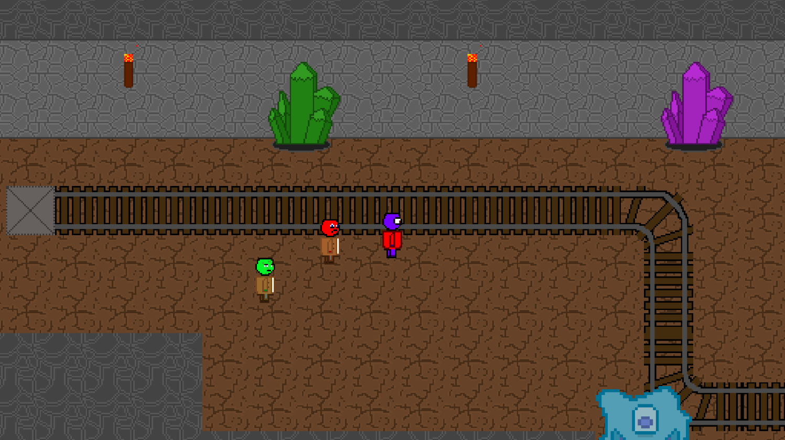
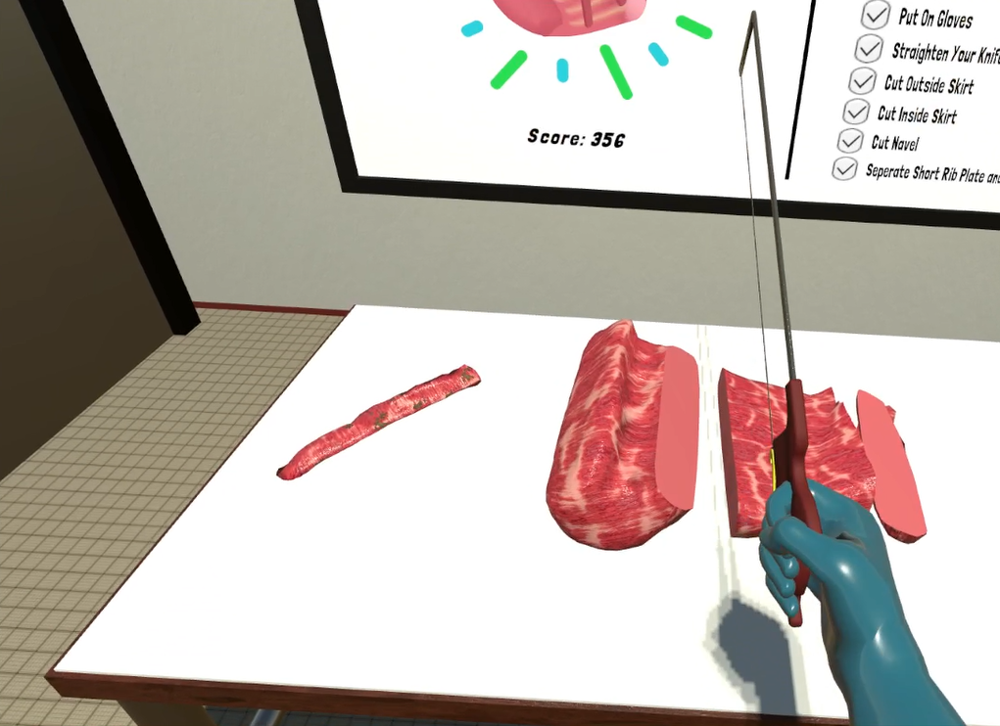
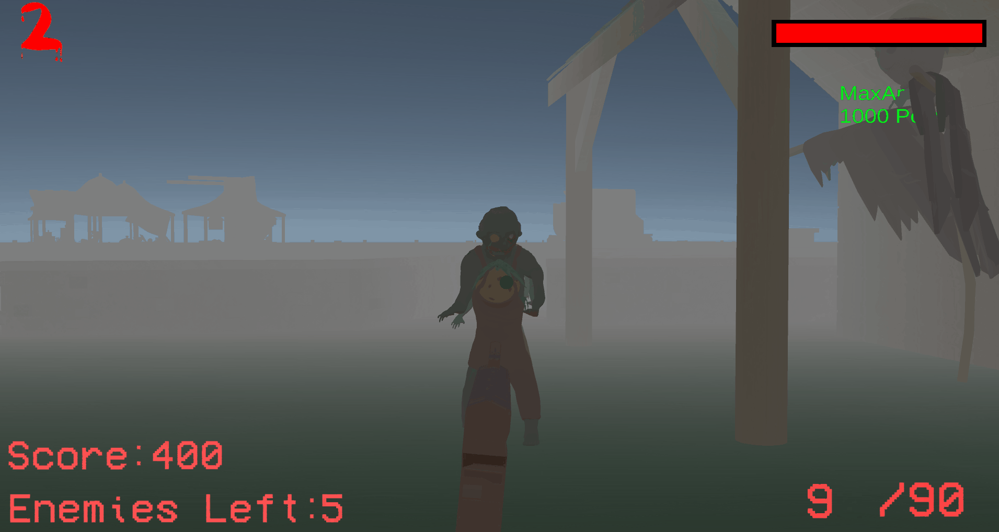
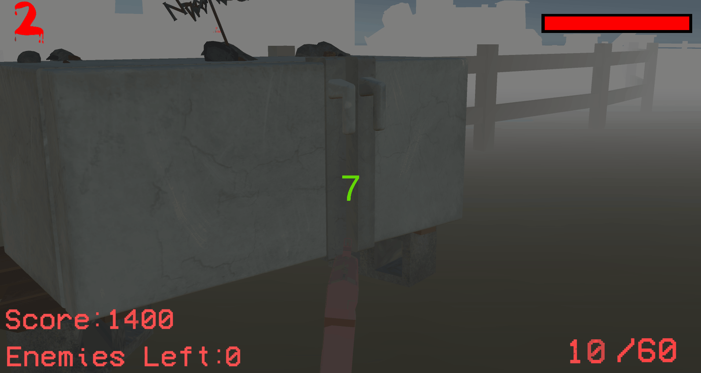
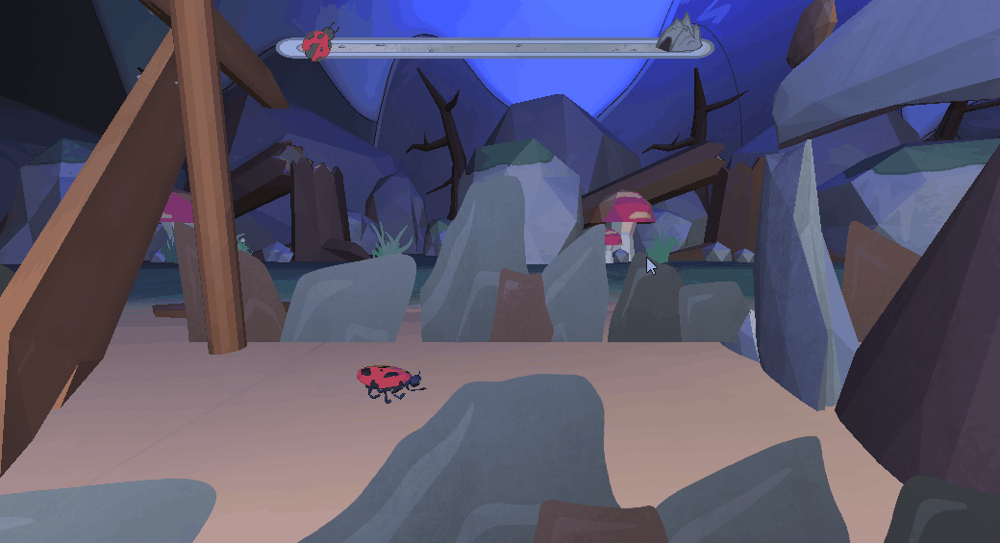
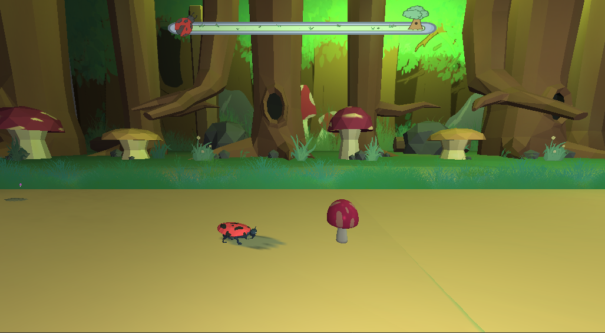
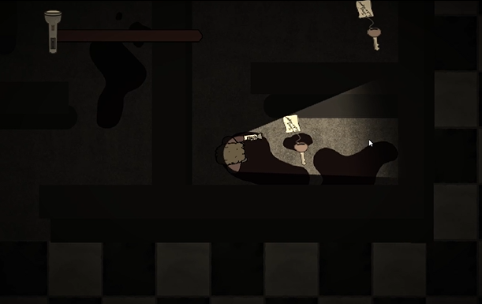
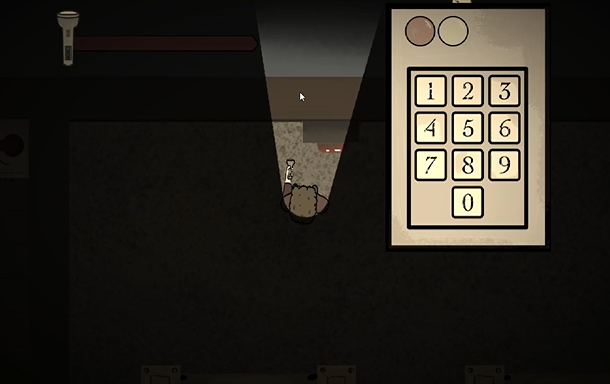

Home
My name is Ethan Brogly and I appreciate you taking time to review my portfolio.


What I hope is evident from my portfolio is my passion for video games and game dev. Although I am at the beginning of my career in this industry, I bring determination, a strong work ethic, and a commitment to continuous learning. I am a creative individual with strong problem-solving and communication skills, and I have experience working with C#, C++, and the Unity game engine. I understand the importance of collaboration and thrive in team environments, to work closely with colleagues to contribute ideas, support shared goals, and to deliver successful projects.
BizaRPG (Unity)
BizaRPG is a turn-based RPG I am developing independently in Unity. I programmed the game and created the art in Aseprite. The game takes place in a bizarre world that has been linked together with mysterious portals letting the player travel between different universes and time periods. The game was inspired by Dragon Quest IX on the DS. The game includes:
-An open world you can freely explore
-Dialogue System that lets you talk to NPC’s and ask them questions
-Turn based combat against up to 4 enemies.
-Full party and armor customization using Unity animation controllers. Armor and weapons also have stats that affect combat.
-Inventory and shop systems
-Questing system


Meat and Poultry Ontario VR game (Unity)
As an intern at Meat and Poultry Ontario, I was a programmer on a VR educational game designed to encourage new people to join the meat processing industry, and to further develop and educate them on health standards and meat cutting techniques. The game has players following voiced steps on how to properly cut meat as well as sanitation procedures. If a player makes a mistake, they have to repeat their attempt. The player can cut the meat with the knife at any point, and it will cut the object creating two smaller gameobjects.


What Romaines of Kolonel Korn (Unity)
What Romaines of Kolonel Korn is a wave-based zombie shooter inspired by Call of Duty Zombies. The game has players exploring a farm, and fighting mutant vegetable zombies for points they can use around the map. Players can use these points on doors to open new areas, guns or perks to power up. I worked as a programmer on this game primarily focusing on enemy pathfinding and buyables around the map.


The game is available on itch.io here
Frog Frontier (C++)
Frog Frontier is a sidescrolling platformer, inspired by early mobile running games like Line Runner. You play as a ladybug going through multiple levels dodging obstacles by flying and crouching in an attempt to escape the frog chasing you. The game features:
-High speed platforming which requires players to fly, jump and crouch their way around obstacles
-Menu System letting players choose their level, pause the game or quit
-Animations that change depending on the player's inputs


The game is available on itch.io
Grim's Overlook (C++)
Grim's Overlook is an adventure horror game I was a programmer on. The game takes place in the gloomy town of Grim’s Overlook. After receiving an alarming letter, Oliver goes to the town to see his mother only to find it abandoned. The game has players exploring the town, collecting items, and solving puzzles to progress. The player will have to utilize their flashlight efficiently in order to navigate the dark town.


The game is available on itch.io here